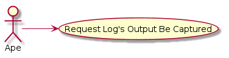
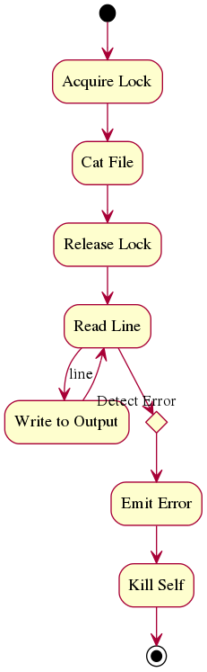

Main Path¶
- The log watcher is started in a thread.
- The watcher cats the specified file (PATH)
- The watcher sends each line to the specified output as it’s produced by the log.
The LogWatcher opens a connection to a device and consumer the log stream from the device, sending it to storage.

2.1. The watcher detects a permission error 2.1.1 The watcher emits an error 2.1.2. The watcher dies
2.2. The watcher detects a path error 2.2.1. The watcher emits an error 2.2.2. The watcher dies
